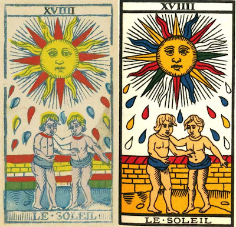

Sun
The earliest Sun card is probably the hand-painted card of the "Charles VI" (also known as the "Gringonneur" for its artist; but both appelations are erroneous) deck of Florence, c. 1460, which shows a lady under a tree with a distaff.The design is repeated in an early printed card from Bologna (center below). It is probably Clotho, of the three Fates in Greco-Roman mythology, the only mythological figure so portrayed. Her association with the sun is by way of an essay by Petrarch, "On the Genius of Socrates," in which Clotho is said to govern the passage from the moon to the sun in the spirit's journey to its home in the Absolute. In another essay he had Clotho governing the soul's sojourn on the Moon, prior to the spirit's separation from the soul. That may be the reason why Clotho is associated witht the Moon in Vieville's tarot of c. 1650 Paris.
 Another card, this time from Lombardy (although the style is Ferrarese) shows a putto standing on a cloud grasping at the sun (center below) I see a certain compositional affinity with the Charity card of an earlier Lombard deck, from the era of Filippo Maria Visconti, duke of Milan, probably the 1440s. The sun sends its nourishing rays to us free of charge, without any consideration of our desert or its reward, like God's charity to us in the Last Judgment. We are like the trees, which owe their life to photosynthesis and must have light to thrive, a message that may be what is conveyed in a woodcut from c. 1500 Ferrara, where the Sun was the 18th card rather than the 19th.
Another card, this time from Lombardy (although the style is Ferrarese) shows a putto standing on a cloud grasping at the sun (center below) I see a certain compositional affinity with the Charity card of an earlier Lombard deck, from the era of Filippo Maria Visconti, duke of Milan, probably the 1440s. The sun sends its nourishing rays to us free of charge, without any consideration of our desert or its reward, like God's charity to us in the Last Judgment. We are like the trees, which owe their life to photosynthesis and must have light to thrive, a message that may be what is conveyed in a woodcut from c. 1500 Ferrara, where the Sun was the 18th card rather than the 19th.Charity is a card that survived only in Minchiate, of which some late 18th century example is below. From this Charity card (at left below) I hypothesize that the round black spot on the Visconti deck. In this type of deck there are two people below the sun, apparently a married couple. Another feature of this deck is that it has the 12 zodiacal signs, of which Gemini seems to be a man and a woman, earch wearing only a wreath of leaves.
Another early card, from Ferrara of probably the 1480s shows Diogenes the Cynic in his barrel conversing with the young Alexander the Great. Alexander in the legend was said to have offered Diogenes a position in his court, or any boon he would wish. "Move so that you aren't blocking the light" Diogenes reportedly replied, a request that can be taken in two senses: the literal sun and the metaphorical one, source of enlightenment. It is that same metaphorical sun that felled St. Paul on the way to Damascus. The sun here has rays both as straightlines and as droplets. Such droplets may be the origin of those seen on later cards of the Milanese/French tradition.
A c. 1500 card on an uncut sheet called "The Cary Sheet," only part of the Sun card has survived. There has been much debate around what the rest of the card looked like. One possibility is that the whole image is that of a naked boy waving a flag. Such an image would connect it both with the earlier Sforza card, the child grasping the Sun, and with the later Parisian card by Vieville which has a young man with a flag.
Another reconstruction of the Cary Sheet card, offered on Tarot History Forum by Marco Ponzi, would even include the horse. His model is a contemporary illustration in which a boy is riding a hobby-horse, while the seven planets plus an angel look on. My guess is that the boy in the middle represents the Christ child, and the whole is the triumph over fate. But that is just a guess. In that case the diagonal line at the bottom right of the card would be the stick to which the horse's head is affixed.

 These two cards, Vieville's and the Cary Sheet, both have an affinity with the earlier Sforza card, in that all three have a naked male figure below a sun; in the latter two, they are also both young boys. I detect a certain correspondence between these cards and a passage in the Chaldean Oracles, an ancient mystical text written in Greek and quoted by the Neoplatonists; it had been brought to the attention of the Italian humanists by Gemistos Plethon, who had produced an edition that he brought with him when he came to Florence as part of the Greek delegation to a council that tried to unify the Greek and Latin churches. In this collection of sayings is a passage that describes a boy on an "aery wave", which perhaps is a cloud; I have copied it at right next to the card. The "things spoken" are certain spells or incantations.
These two cards, Vieville's and the Cary Sheet, both have an affinity with the earlier Sforza card, in that all three have a naked male figure below a sun; in the latter two, they are also both young boys. I detect a certain correspondence between these cards and a passage in the Chaldean Oracles, an ancient mystical text written in Greek and quoted by the Neoplatonists; it had been brought to the attention of the Italian humanists by Gemistos Plethon, who had produced an edition that he brought with him when he came to Florence as part of the Greek delegation to a council that tried to unify the Greek and Latin churches. In this collection of sayings is a passage that describes a boy on an "aery wave", which perhaps is a cloud; I have copied it at right next to the card. The "things spoken" are certain spells or incantations. 
 "Sandy", again on THF, has attempted a reconstruction based on the
fact that the next known card, one found in the wall of the Sforza
Castle during remodeling, in fact does have a male and a female on it,
as does the card of the earliest preserved TdM deck, that of Noblet in
c. 1660 Paris .The Gemini illustration is from a 14th century book of hours. There are many like them, although most are not so sexually explicit. Another example (Sandy's combination) is at right. And below is a 1496 zodiac that not only has the male/female Gemini but also the crayfish for Cancer and the sexually ambiguous figure pouring from two jugs for Aquarius.
"Sandy", again on THF, has attempted a reconstruction based on the
fact that the next known card, one found in the wall of the Sforza
Castle during remodeling, in fact does have a male and a female on it,
as does the card of the earliest preserved TdM deck, that of Noblet in
c. 1660 Paris .The Gemini illustration is from a 14th century book of hours. There are many like them, although most are not so sexually explicit. Another example (Sandy's combination) is at right. And below is a 1496 zodiac that not only has the male/female Gemini but also the crayfish for Cancer and the sexually ambiguous figure pouring from two jugs for Aquarius.
 For his part, Paul Marteau changes the expressions less, but he, or the woodblock he inherited, changes the direction of the drops. At left you can see the difference. In the 18th century TdM style, the drops do not radiate from the sun in all directions as they did earlier for Noblet and Dodal, but ascend to the sun, just as the drops in the Moon card ascend to that body. That is consistent with the idea, from Plutarch, that the spirit separates off from the soul and ascends higher, to the Sun, just as earlier in its journey the soul/spirit combination separated off from the body and rose to the Moon.
The occultists
Court de Gebelin, 1781, has precious little to say about the Sun card, just (p. 25 of Karlin's translation):
The Sun is represented here as :the physical father of Humans & and of all of Nature; he enlightens men in Society; he presides in their cities, concerning his rays distilling into tears of gold & pearls; thus we indicate the lucky influences of this star.He could have said much more about its significance for the ancient Egyptians. Their high god, to whom even Isis had to give homage, was the sun god Ra, who each day emerged from his perilous night-sea journey. He is also the means by wom Isis and Osiris unite (the water with the liand) and by whom their son Horus will become founder of the united kingdom of Egypt, the first pharoah.
Etteilla is a little more expansive, but in much the same vein:
...the Sun is the instrument by which the Creator appeared in order to light up the life of all Beings; as the Sun, it carried itself to all the Globes of our Universe. These Globes can be nothing other than the proper matrices to receive life, that one might compare to a fluid that contains and transfixes all of Nature, since it is the true spirit of the Lord, the Sun that vivifies all the embryos, enfuses itself so that all the Globes are necessarily people, or matrices, which the order of all things demonstrates: gold, and also coal, being matrices, from the moment that Nature animated them, or Art revived them.As such it was the second card, governed by the element of Fire, on the first day of creation.
On the card (at right, the 1789 original, the Grand Etteilla II of 1840, and the Grand Etteilla III of c. 1870) the keywords are: upright, Eclaircissement, and reversed, Feu, Enlightenment and Fire, with the following "synonyms and related meanings" added by one of his followers (these are found in the 1840 book by "Julia Orsini" introducing the Grand Etteilla II:
Upright: Light, Explanation.—Clarity. Heaven and Earth.— Untangling. Development. Instruction. Opening. Analysis. Discovery. Interpretation. Revelation. Elucidation. Fire. Sun. Temple of Heat.With Eliphas Levi that the card took a new direction. He described it as (Greer trans., pp. 399-400):
Reversed.: Heat, Glimmer.—Conflagration.—Flame, Passions.—Meteors; Lightning Flash, Thunderbolt.—Inner, Outer, Central, . Warmth. Small illumination. Spark. Ray of light. Burning. To burn. Ardor. Fire of love. To light. Flash. Thunder. Lightning. Electricity. St. Elmo’s Fire. Fire of Nature. Magnetism. Salamander.
...a radiant Sun and two naked children who hold hands in a fortified enclosure. In other tarots, it is a spinner uncoiling the destinies; in others, a naked child astride a white horse, holding a scarlet banner.The first is his version of the TdM, who do not there hold hands. This version of the card was realized to some degree by Wirth (middle below), who, however, shrank from making the pair children. Case had no such scruples (at right(. We have already seen the lady uncoiling destinies in the "Charles VI" card; Levi is correct in identifying her with one of the three Fates. For the third, he has taken liberties with the Vieville version. We can see here most of the particular changes made by Waite (at left).
Further commentary is afforded in Levi's Doctrine and Ritual of High Magic Book I, chapter 19, and book II, the same. There it is the card of the philosopher's stone, which is "through analysis, ...a powder, the powder of projection of the alchemists; before analysis and after synthesis, it is stone." .He adds:
There is only one important operation in the work; it consists of sublimation, which is nothing other, according to Geber, than the elevation of the thing which is dry through the means of fire, with adherence to its proper vessel.Later he says of the Stone (p. 367):
Obtained through analysis, one could call it the universal sublimation; found through synthesis, it is the veritable panacea of the ancients, because it cures all maladies, either of the soul or the body, and was called the medicine par excellence of all of nature.It is also "sulphurized mercury or the light of life directed and rendered all-powerful by a secret operation" (Ibid) How any of this applies to the card he does not say. As a stone, he says it is black. Perhaps one child is sulphur, the other mercury, the drops the sublimation, and the sun the gold or powder. But I am just guessing.
Paul Christian says of this card that it "expresses in the divine world the supremem Heaven, in the intellectual world sacred truth, and in the human world peaceful Happiness. He adds to Levi's description the circle of flowers that the pair stand in. "It is the symbol of happiness promised by the simple life and by moderation of all one's desires." The sun here is the light that "illuminates those who know how to use it and strikes down those who are ignorant of its power or abuse it."

The Sun reveals the reality of things and shows them as they really are without the veil of any illusion. ...It is in this sense that the incarnated soul finds in the Sun its promised Redeemer. The soul is not condemned to struggle in the heart of matter except with a view of purifying itself in order to make possible the union of the spiritual, imprisoned in the flesh, with universal spirituality.That we see a "young couple" represents "the individual soul in harmony with the spirit whose feelings are married to reason." The wall represents that this is a new Eden, which requires protection against "the remaining barbarity which is brutal and opposed to man's brotherhood" (p. 142). Its walls are blue, for emotion, yellow, for intelligence, and red, for spirit, all in harmony. A rain of fine gold descends on the pair; it is "the Gold of the Philosophers"; at the same time"the children of light transform the vile lead of base instincts into pure gold, both moral and intellectual" (p. 143)
The card signifies, therefore, the transit from the manifest light of this world, represented by the glorious sun of earth, to the light of the world to come, which goes before aspiration and is typified by the heart of a child.
But the last allusion is again the key to a different form or aspect of the symbolism. The sun is that of consciousness in the spirit - the direct as the antithesis of the reflected light. The characteristic type of humanity has become a little child therein--a child in the sense of simplicity and innocence in the sense of wisdom. In that simplicity, he bears the seal of Nature and of Art; in that innocence, he signifies the restored world. When the self-knowing spirit has dawned in the consciousness above the natural mind, that mind in its renewal leads forth the animal nature in a state of perfect conformity.
On Paul Foster Case's card, the four sunflowers represent the mineral, vegetable, animal, and human worlds. In addition there is one more, for the spirit, as yet partially opened. For him the card signifies regeneration as a spiritual being. The wall represents truth in a material sense, solid as rock. The little girl, he says, is the subconscious regenerated as intuition. Her gesture with her free hand, as though pushing against the wall, is one of repudiation of materiality, complementing the little boy's gesture of acceptance of the spiritual. While in the natural world the subconscious (feminine) is subordinate to consciousness (masculine), the two are equal in the spiritual world. For him the drops, depicted again as little yods, go both down from the sun and up from the two figures.
Jungian interpretations
For Jung the sun was most commonly an image of the ego, which in the first half of life aims toward high aspirations and in the second half slowly retreats from them. At the same time it is ever born anew after its night-sea journey through the underworld. Many of the interpretations given by the occultists can fit into such a metaphor. As the philosopher's stone it is born even below the sensitive into the mineral nature, from which it ascends to become pure spirit. The declining sun reflects Christian's observation that happiness lies in the moderation of desires, a tendency that comes with age.
Sallie Nichols, who uses as her only example the card the Marteau version, emphasizes the idea of play and harmonious feeling. (She may not have attended closely to the figures' serious expressions).
For her it is a world of innocence. She cites Blake's "Songs of Innocence," in which the lion lies down with the lamb. It is a dream world, of course, a world that never was and never will be. Blake was thinking of a heaven for sheep, not one for lion! Perhaps that is why in a long quotation from Jung the psychologist contrasts pre-conscious and post-conscious "essences":
...the child symbolizes the pre-conscious and the post-conscious essence of man. His pre-conscious essence is the unconscious state of earlies childhood; his post-conscious essence is an anticipation by analogy of life after death.We must not forget that the Sun card is long after the Death card. We do not have to be dead to appreciate it; we just have to imagine being dead, in a kind of fantasy-heaven.
Nichols, however, is thinking of the therapeutic temenos, or sacred ground, where one can play with yearnings without bothering with realistic thinking, even give them expression in sensory terms, as in what Jungians call "sand-tray therapy," in which the analysand picks out toy figures and objects with which to populate a small sand-box, creating a little world in accord with what seems right at the moment. The wall behind the figures does something similar for the two inside. The occultists' addition of a ring of flowers does so even more.
It is especially, she says, a place to exercise the "inferior function," that least adapted to the world. It is there, where the ego is in less secure control, that the unconscious can find the optimal place to express itself. It is whatever is opposite to one's dominant function. Of course she always has thinking as dominant, feeling as inferior, and sensation as dominant, intuition as inferior. One might wonder if everyone in our culture is like that. In the Sun card, it makes no difference. Both are there; and while they may have been at odds before, now they are in harmony "Only within such a consecrated space could the instinctual oppositees (pictured before as howling beasts) emerge transformed as naked children." By "howling beasts" she means the dog and wolf of the Moon card. Without that card, and the ones before of it, of course, we could not be where we are now.
She imagines the two children interacting in a way that neither rebuffs the other nor misunderstands, made possible by their openness to each other. I wonder about the desirability of this fantasy-world without conflict. Of course real childhood is not like that; it is full of howls and rebuffs. Nor is the "sacred space" of therapy without them either. It is only when the two children are two parts of oneself that such harmony is even conceivable, perhaps at the end of an "active imagination." And perhaps not even then.
Yet there remains an element of reality, if one child is one's mind and the other one's body. She quotes what she calls "an old alchemical saying" (I do not know it myself, and she does not give a reference)< "The mind shold learn compassionate love for the body." This seems to refer to the body as it is, not some spiritualized entity. It is a recognition that the body has a mind of its own, so to speak. The trick is to be able to listen to it. It is not the body that craves sweets, but the body that says enough is enough. Or is that the body speaking at all? Traditionally moralists have considered the body to be insatiable.
Besides the body, there is also nature. Speaking of the Hopi, who consider their daily prayers essential to the rising of the sun each day, Nichols says,
Western man has destroyed his intimate connection with nature, to the detriment of both mankind and nature. When man's relationship to nature is broken, the world becomes as sterile, dark, cold, and desolate as if the sun literally did not rise.
But somewhat strangely, her next sentence emphasizes that it is our relationship to nature as a set of symbols that is at stake; it is not the now-familiar issue of global warming, in which nature fights back against our degradation of its balance. It is the symbolic life that must arise for us on a daily life. In this sense the sun is a kind of mandala, with things grouped around a center, like the rays of the sun on the card. Moreove, the type of rays alternate, wavy and straight, a kind of unity of opposites. At the same time it is fair to group nature and the Self together: we are a part of nature just as the ego is a part of the Self. The sun is now a symbol of the Self rather than the ego, and nature is to the ego part of that Self. The ecological ego is one that is de-centered. Is it that besides the collective unconscious, there is a world unconscious? Or is it that humanity's relationship to the world is part of the collective unconscious? In any case, without living in harmony with nature, in the sense of a relationship to the whole, it is we who are destroyed, while the sun keeps on shining.